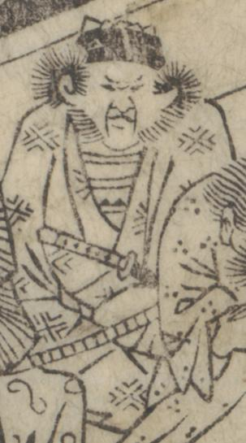

← 图鉴索引

酒呑童子の手下である鬼。角はなく、人のような姿をして座っている。
著作者：岡田玉山／出典：親書誌：U426_nichibunken_0432：繪本頼光一代記／日付：2016／資源識別子：U426_nichibunken_0432_0013_0001
Copyright (c)2010- International Research Center for Japanese Studies, Kyoto, Japan. All rights reserved.